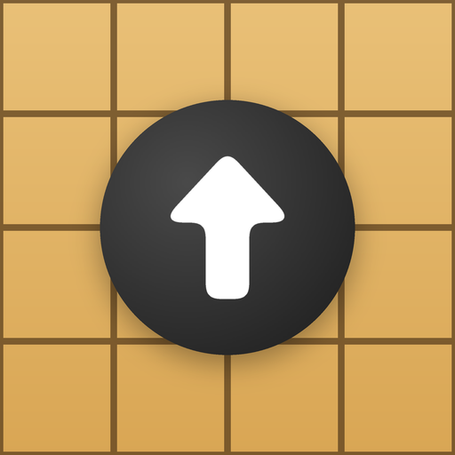
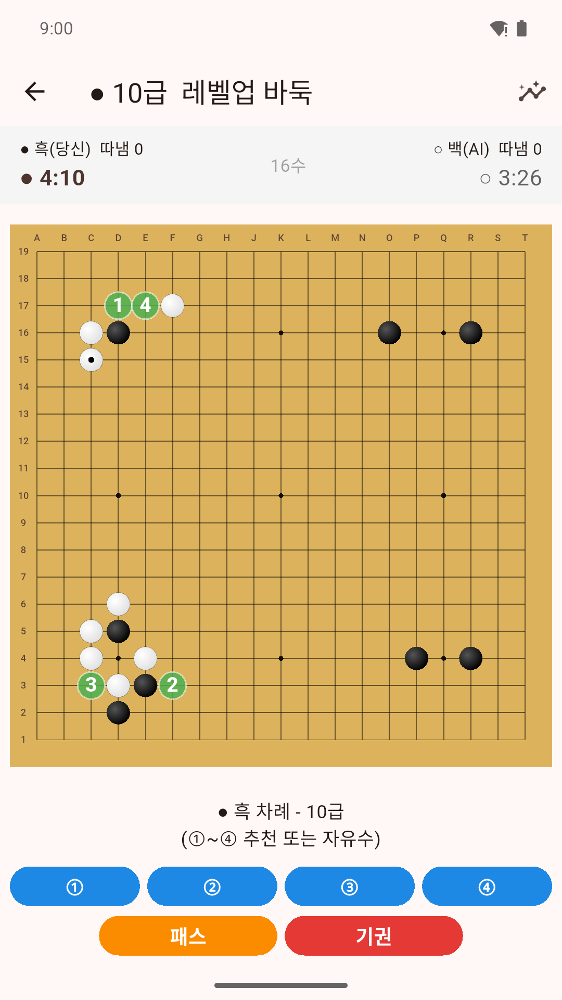
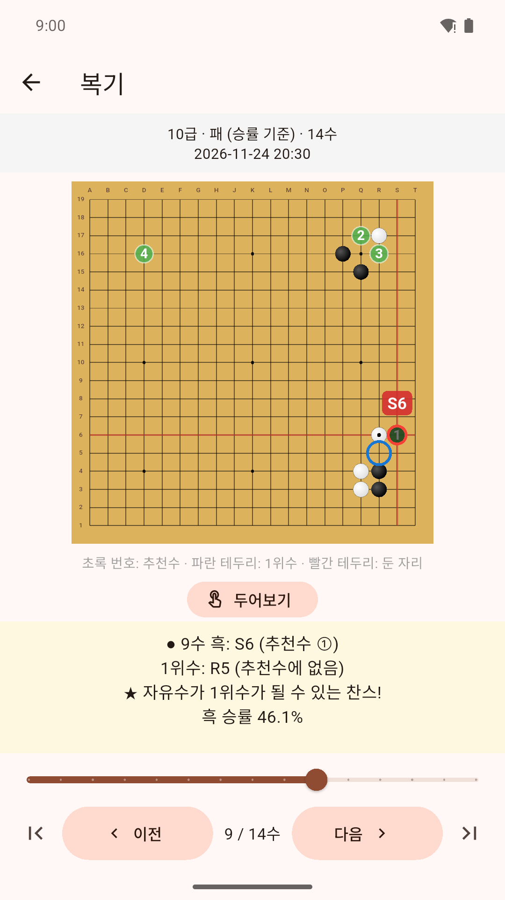
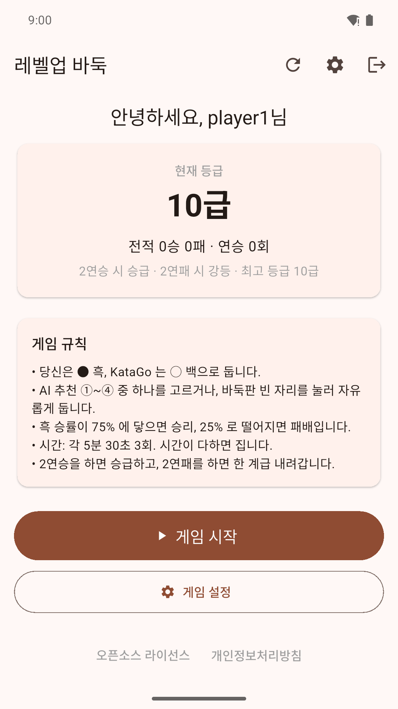

레벨업 바둑
4지선다 + 자유수 · Android
바둑 AI와 대국하며 18급부터 9단까지 급수를 올려 가는 1인용 바둑 게임입니다. AI가 추천한 네 수 중 하나를 고르거나, 원하는 자리에 자유롭게 둡니다.



4지선다와 자유수
내 차례가 되면 추천수 네 개가 바둑판에 표시됩니다. 그중 하나를 고르거나 빈 자리를 눌러 자유롭게 둘 수 있습니다.
급수와 승급
18급에서 9단까지. 2연승하면 한 급 올라가고 2연패하면 한 급 내려갑니다. 가입할 때 내 급수를 고를 수 있습니다.
복기
끝난 대국을 한 수씩 다시 보고, 다른 자리에 두어 보면 몇 번째로 좋은 수였는지 알려 줍니다.
인터넷 없이
바둑 AI인 KataGo가 기기 안에서 동작합니다. 계정과 전적, 대국 기록은 기기 안에만 저장됩니다. 광고와 결제가 없습니다.